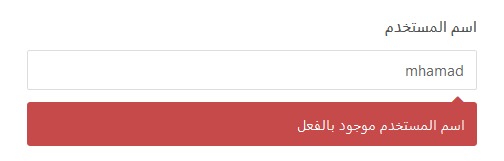

SQLتخزين قيم موحدة في العامود
مفهوم القيم الموحدة
عندما تحاول إنشاء حساب جديد في أي موقع إلكتروني, تلاحظ في بعض الأحيان أنه يطلب منك إدخال معلومات لم يدخلها أحد غيرك من قبل.
فمثلاً, عندما يطلب منك إدخال إسم المستخدم ( Username ) قد تجده يخبرك بأن الإسم الذي أدخلته غير متاح.
أيضاً, إذا كنت تملك حساب في موقع ما و حاولت إنشاء حساب آخر في نفس الموقع و باستخدام نفس البريد الإلكتروني ستجد الموقع لا يسمح لك بذلك.
إذا حاولت إنشاء حساب جديد في مدونة هرمش و قمت بإدخال mhamad كإسم المستخدم, سيظهر لك أنه لا يمكنك استخدام هذا الإسم كالتالي.

إذاً عندما أدخلنا هذا الإسم, قام المدونة بالبحث في قاعدة البيانات الخاصة بها عن إسم المستخدم الذي أدخلناه.
بما أنها وجدت مستخدم آخر يملك نفس إسم المستخدم الذي أدخلناه أخبرتنا أنه لا يمكننا إستخدام هذا الإسم, و لهذا تريدنا أن ندخل إسم آخر.
فوائدة القيم الموحدة في التطبيقات و المواقع
في الأمثلة التي ذكرناها سابقاً, الفائدة من جعل إسم المستخدم الموحد قد يكون لها فوائد عديدة و نذكر منها:
يمكنك تسجيل الدخول به.
يمكنك البحث عن أي مستخدم من خلال إسم المستخدم الخاص به.
يمكنك الإبلاغ عن أي مستخدم من خلال إسم المستخدم الخاص به.
في مواقع التواصل الإجتماعي مثل تويتر و فيسبوك, يمكنك أن تشير لأي حساب ( أي تفعل له Mention ) من خلال وضع الرمز @ و من ثم ذكر إسم المستخدم.
القيم الموحدة مفيدة جداً في قواعد البيانات حيث لاحظنا في دروس سابقة أن إعطاء رقم تعرفة موحد id لكل سطر في الجدول يتيح لنا إمكانية الوصول إليه بكل سهولة. و في الدروس الاحقة ستلاحظ أهمية القيم الموحدة في إنشاء علاقات بين الجدوال التي ننشئها في نفس قاعدة البيانات.
الكلمة UNIQUE
في حال أردت جعل العامود لا يقبل أن يتم تخزين نفس القيمة فيه أكثر من مرة يمكنك إضافة الخاصية UNIQUE إلى نوع العامود.
الآن, عليك معرفة أن طريقة استخدام هذه الكلمة تختلف من قاعدة بيانات لأخرى و لكنها تستخدم لنفس الغرض.
ملاحظة: في الأمثلة التي وضعناها في هذا الدرس, إعتمدنا أسلوب قواعد بيانات MySQL لأنها القاعدة التي نتعامل معها منذ بداية الدورة.
في قواعد بيانات MySQL
لإنشاء عامود لا يقبل أن يتم تخزين نفس القيمة فيه أكثر من مرة نضيف الخاصية UNIQUE كالتالي.
CREATE TABLE table_name (
column_name datatype,
UNIQUE (column_name)
);
بين أقواس الكلمة UNIQUE نكتب إسم العامود الذي نريده أن لا يحتوي على أي قيم مكررة.
في قواعد بيانات Access / SQL Server / Oracle
لإنشاء عامود لا يقبل أن يتم تخزين نفس القيمة فيه أكثر من مرة نضيف الخاصية UNIQUE كالتالي.
CREATE TABLE table_name (
column_name datatype UNIQUE
);
إنشاء عامود لا يقبل قيم مكررة
قم بتنفيذ الإستعلام التالي حتى تنشئ قاعدة بيانات جديدة إسمها harmash و تنشئ فيها جدول إسمه users يحتوي على بيانات 5 مستخدمين.
ملاحظة: قمنا بإضافة الخاصية UNIQUE إلى العامود username لأننا لا نريد أن يكون هناك مستخدمين عندهم نفس إسم المستخدم.
الإستعلام
-- سيتم حذفها harmash في حال كان يوجد بالأساس قاعدة بيانات إسمها
DROP DATABASE IF EXISTS harmash;
-- harmash هنا قمنا بإنشاء قاعدة بيانات جديدة إسمها
CREATE DATABASE harmash;
-- harmash هنا قمنا بتحديد أن أي إستعلام جديد سيتم تنفيذه على قاعدة البيانات
USE harmash;
-- يتألف من 4 أعمدة users هنا قمنا بإنشاء جدول جديد إسمه
-- لأننا قمنا بتحديدها قبل إستدعاء هذا الأمر harmash سيتم إنشاء هذا الجدول بداخل قاعدة البيانات
CREATE TABLE users (
id INT NOT NULL PRIMARY KEY AUTO_INCREMENT,
first_name VARCHAR(50),
last_name VARCHAR(50),
username VARCHAR(30),
UNIQUE(username) -- لا يقبل تخزين قيم مكررة username هنا قمنا بتحديد أن العامود
);
-- هنا قمنا بإضافة 5 أسطر في الجدول, أي أضفنا معلومات 5 مستخدمين
-- لاحظ أننا لم نحدد أسماء الأعمدة التي سنضع فيها البيانات لأننا قمنا بملئ جميع المعلومات
-- في البداية هو حتى يكون عدد القيم الموضوعة يساوي عدد أعمدة الجدول null سبب وضع الكلمة
-- ستقوم قاعدة البيانات بوضع رقم تعرفة مختلف لكل سطر null مكان الكلمة
INSERT INTO users VALUES (null, "Ahmad", "Alhazem", "ahmad");
INSERT INTO users VALUES (null, "Rami", "Algharib", "rami");
INSERT INTO users VALUES (null, "Said", "Alnaja", "said");
INSERT INTO users VALUES (null, "Noura", "Jamali", "noura");
INSERT INTO users VALUES (null, "Amani", "Sarrouf", "amani");
بعد تنفيذ الإستعلام السابق في phpMyAdmin سيتم إنشاء قاعدة البيانات harmash و إنشاء الجدول users بداخلها.
قم بالنقر على إسم قاعدة البيانات harmash من القائمة اليسرى حتى تبدأ بالتعامل معها و تطبيق ما ستتعلمه في هذا الدرس.
البيانات التي قمنا بإضافتها بشكل إفتراضي في الجدول users.
| id | first_name | last_name | username |
| 1 | Ahmad | Alhazem | ahmad |
| 2 | Rami | Algharib | rami |
| 3 | Said | Alnaja | said |
| 4 | Noura | Jamali | noura |
| 5 | Amani | Sarrouf | amani |
تجربة إدخال قيم متكررة في عامود نوعه UNIQUE
الإستعلام التالي يحاول إضافة مستخدم جديد و إعطائه إسم مستخدم يملكه شخص آخر.
الإستعلام
INSERT INTO users (first_name, last_name, username) -- هنا قمنا بتحديد أسماء الأعمدة التي سنمرر لها القيم
VALUES ("Ahmad", "Harmush", "ahmad"); -- هنا قمنا بتمرير القيم التي سيتم إضافتها فيها
عند تنفيذ الإستعلام سيظهر الخطأ التالي.
معنى هذا الخطأ أنه يوجد في الأساس مستخدم عنده username يساوي 'ahmad' لهذا لا يمكن إضافة المستخدم الجديد.
Duplicate entry 'ahmad' for key 'username'
لإضافة المستخدم السابق, ستكون مجبر على تغيير إسم المستخدم سواء تغييره بالكامل أو التعديل عليه.
الإستعلام التالي يضيف المستخدم السابق و يعرض كل بيانات المستخدمين الموجودين في الجدول.
ما فعلناه لحل مشكلة Duplicate entry هو تغيير قيمة الحقل usernam إلى 'ahmad2020' لأنه لا يوجد مستخدم آخر يملك نفس هذه القيمة.
الإستعلام
INSERT INTO users (first_name, last_name, username) -- هنا قمنا بتحديد أسماء الأعمدة التي سنمرر لها القيم
VALUES ("Ahmad", "Harmush", "ahmad2020"); -- هنا قمنا بتمرير القيم التي سيتم إضافتها فيها
SELECT * FROM users; -- لمعرفة التغيرات الجديدة users هنا قمنا بعرض جميع البيانات الموجودة في الجدول
سنحصل على النتيجة التالية عند تنفيذ الإستعلام.
| id | first_name | last_name | username |
| 1 | Ahmad | Alhazem | ahmad |
| 2 | Rami | Algharib | rami |
| 3 | Said | Alnaja | said |
| 4 | Noura | Jamali | noura |
| 5 | Amani | Sarrouf | amani |
| 6 | Ahmad | Harmush | ahmad2020 |

 محرر الويب
محرر الويب نظام الألوان
نظام الألوان محول الوحدات
محول الوحدات محلل عناوين الشبكات
محلل عناوين الشبكات